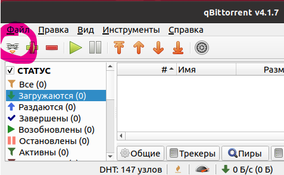
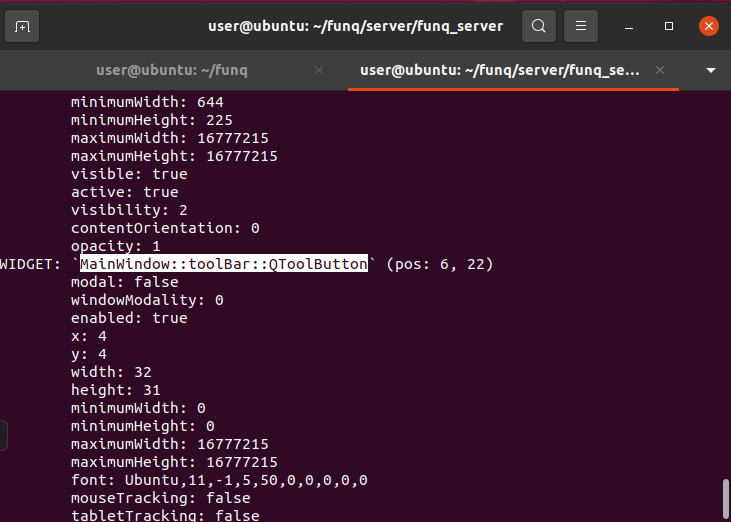
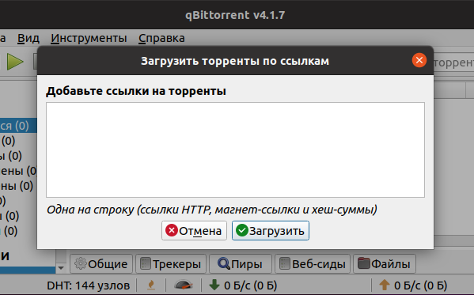
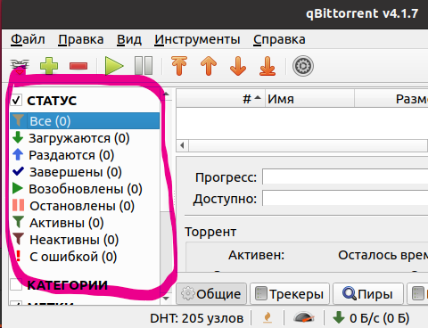

В этой статье я хочу поделиться недавно открытым для себя инструментарием, позволяющим создавать кроссплатформенные автотесты для приложений на Qt.
Сам я занимаюсь контролем качества SCADA-системы, пользовательский интерфейс которой как раз построена на основе Qt. В процессе доработки программного комплекса и добавления новых функций наша команда сталкивается с необходимостью регулярного регрессивного тестирования, так как нередко, по разным причинам, обновлённый компонент может просто перестать запускаться или начать падать в самых стандартных кейсах. Таким образом, было решено в инициативном попробовать покрыть тестами хотя бы базовые сценарии работы с наиболее критическими компонентами системы.
Когда я начал искать инструменты для решения этой задачи, то оказалось, что вариантов не так уж и много... точнее их вроде бы как и много, но большинство уже давно не поддерживается и по ним крайне мало материала. Стоит отметить, что рассматривался только accessibility-подход, когда у нас есть доступ к объектам интерфейса на прямую и мы можем получать различные свойства этих объектов (текст, картинки, подсказки и другое). Построение тестов на основе автокликеров (вроде pyautogui) не рассматривалось в связи с очень ограниченными возможностями такого подхода..
Из актуального первым во всех топах идёт Squish GUI Tester, но главной проблемой здесь безусловно является его платность, а значит и невозможность в сложившейся политической ситуации получить лицензию. Другим, более привлекательным вариантом, показался QtWebDriver - драйвер для Selenium, решение с открытым исходным кодом. Но с ним есть некоторые трудности - для его работы необходим доступ к исходникам тестируемого приложения и сборка отдельной версии (либо сборка QtWebDriver с хидерами самого приложения).
Полагаю, что вступление уже и так затянулось, поэтому перейдём к найденному решению. В ходе усиленного гуглежа всё таки нашлось кое-что подходящее для решения моей задачи - funq.
https://github.com/parkouss/funq
https://funq.readthedocs.io/en/latest/ - документация
Funq - инструмент для функционального тестирования QT-приложений с помощью python.
Преимущества:
Недостатки:
Для начала клонируем репозиторий, появится папка funq
git clone https://github.com/parkouss/funq
Теперь устанавливаем funq с помощью менеджера пакетов pip
sudo pip3 install funq funq-server
Крайне важно сказать, что funq состоит из двух частей: клиентской и серверной, серверная в свою очередь включает в себя часть написанную на QT/C++, которая и обеспечивает доступ к объектам интерфейса. Серверная часть и тестируемое приложение должны быть собраны на одной версии QT! Займёмся сборкой. Для начала установим необходимые пакеты.
sudo apt install qt5-default qtdeclarative5-dev
Переходим в funq/server выполним следующие команды
qmake
make
cp ./bin/* ./funq_server/
Теперь в funq/server/funq-server находится готовая серверная часть.
Для демонстрации возможностей по управлению интерфейсом предлагаю использовать qBittorrent.
sudo apt install qbittorrent
Давайте попробуем нажать на какую-нибудь кнопку. Очевидно, что нам нужно знать как к ней обратиться, наверняка у неё должно быть имя. Для того, чтобы узнать путь до конкретного элемента интерфейса запустим funq в режиме инспектирования.
python3 runner.py --pick qbittorrent #директория funq/server/funq-server
Открывается окно qBittorrent. Зажимаем комбинацию клавиши Ctrl+Shift и кликаем по кнопке "Добавить ссылку на торрент..."

Окно qBittorrent
В консоли появляется сообщение, в котором указан путь до кнопки, запомним его.

Консоль после нажатия на кнопку
Прекращаем работу в режиме инспектирования, теперь нужно запустить qBittorrent в режиме "управления".
python3 runner.py --host 0.0.0.0 --port 9999 qbittorrent
В новой консоли запускаем python и выполняем следующий действия.
from funq.client import FunqClient
funq = FunqClient("127.0.0.1", 9999)
funq.widget(path='MainWindow::toolBar::QToolButton').click() #путь до кнопки
Ура! Мы нажали кнопку и открылось диалоговое окно.

Диалоговое окно
С помощь funq можно легко взаимодействовать с элементами дерева и таблиц, хотя в начале пути я почти что впал в отчаяние, так как именно это мне не удавалось. Оказалось, что в документация устарела, либо в ней изначально допущена ошибка.
Попробуем получить доступ к выделенной таблице и выбрать какой-нибудь элемент.

С помощью режима инспектирования узнаём путь до таблицы. Попробуем выбрать строку "Неактивны (0)":
from funq.client import FunqClient
funq = FunqClient("127.0.0.1", 9999)
path_to_Table = MainWindow::centralWidget::QTabWidget::qt_tabwidget_stackedwidget::QSplitter::TransferListFiltersWidget::QScrollArea::qt_scrollarea_viewport::QFrame::StatusFilterWidget
table = funq.widget(path=path_to_Table)
model = table.model().items() #получаем доступ к модели данных таблицы
item = model.item_by_named_path([u'Неактивны (0)']) #находим item по пути до него
table.select_item(item) #селектим item
В документации доступ к модели осуществляется следующим нерабочим образом, это нужно учитывать.
...
model = table.model_items()
...
Некоторый элемент таблицы можно не только выбрать, но и кликнуть по нему, вызвать редактор, посмотреть или установить свойства. Подробнее об этом написано в документации, так же можете воспользоваться dir:
dir(table)
>>>['CPP_CLASS', '__class__', '__delattr__', '__dict__',
'__dir__', '__doc__', '__eq__', '__format__', '__ge__',
'__getattribute__', '__gt__', '__hash__', '__init__',
'__init_subclass__', '__le__', '__lt__', '__module__',
'__ne__', '__new__', '__reduce__', '__reduce_ex__',
'__repr__', '__setattr__', '__sizeof__', '__str__',
'__subclasshook__', '__weakref__', '_item_action',
'activate_focus', 'call_slot', 'classes', 'click',
'click_item', 'client', 'close', 'create', 'current_editor',
'dclick', 'dclick_item', 'drag_n_drop', 'edit_item',
'editor_class_names', 'grab', 'keyclick', 'map_position_from',
'map_position_to', 'model', 'move', 'oid', 'path', 'properties',
'resize', 'select_item', 'set_properties', 'set_property',
'shortcut', 'wait_for_properties']
Взаимодействие с элементами дерева осуществляется точно таким же образом как и в случае с таблицей, доступ к элементу осуществляется по пути до него, путь передаётся в item_by_path() в виде списка.
Вы уже наверняка заметили, что пути до элементов интерфейса могут быть очень длинными и неудобочитаемыми, поэтому в funq предусмотрена возможность использования алиасов, позволяющих выделить имена в отдельный файл и многократно уменьшить дублирование.
Создадим файл example.aliases и заполним его следующим содержимым:
commonPath = MainWindow::centralWidget::QTabWidget::qt_tabwidget_stackedwidget::QSplitter::TransferListFiltersWidget::QScroll
table = {commonPath}::qt_scrollarea_viewport::QFrame::StatusFilterWidget
Теперь мы можем передать example.aliases в клиент и использовать короткие имена
...
funq = FunqClient("127.0.0.1", 9999, "example.aliases")
table = funq.widget('table')
...
В последней версии funq нельзя достучаться до этой части интерфейса. Данный момент является для меня критичным, потому что без него невозможен автоматический запуск и первичная настройка тестируемого приложения. Решением пока что является костыль в виде pyautogui, что приемлемо, так как он необходим только в нескольких местах.
Я намеренно не рассказываю про возможность запуска тестов с помощью nosetests, для которого в funq есть плагины, полагая, что лучше использовать pytest, так как он более распространён, имеет больше возможностей и активно развивается.
Надеюсь, что эта статья поможет тем, кто хочет начать тестировать QT GUI, но не может найти подходящего инструмента.